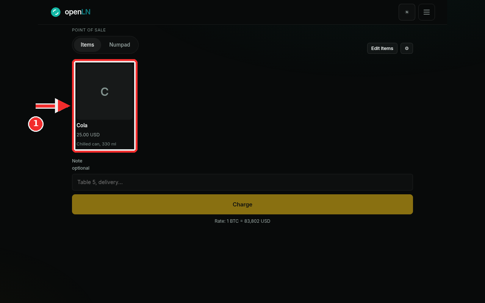
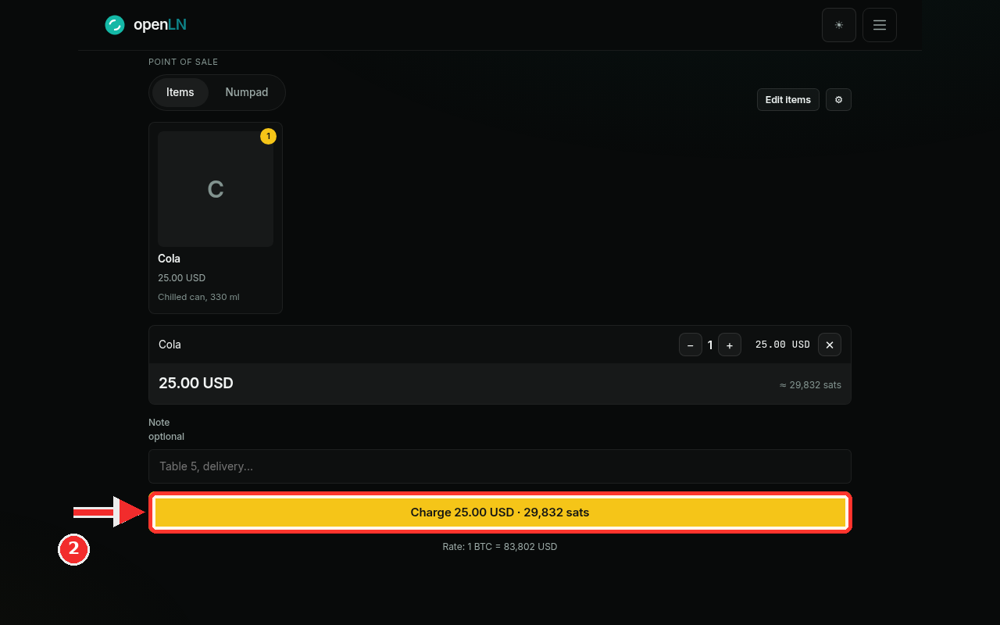
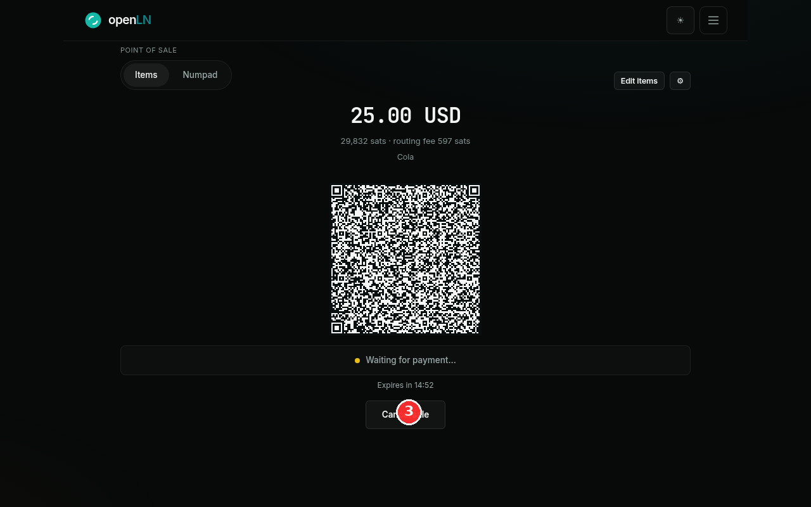

How to take a sale with the web POS
The web POS turns any browser into a Lightning register: no hardware, no pairing, just items and a QR code. This guide walks you through one full sale, from tapping an item to watching the payment land. Your sales are paid straight into the wallet you connect, and you will need one thing before you start: a wallet that can receive.
- You are signed in to your openLN account.
- A wallet that can receive is connected. If the POS shows Connect a wallet to start selling, press Connect wallet and link one first.
- Open the POS by picking POS in the menu drawer, or by tapping the POS button on the Wallet screen.
- Nothing is charged until the customer pays. You can close or cancel any sale with no charge.
Tap item tiles to build the sale
The POS opens on the Items tab with your item grid. Each tile is one product with its name and price, for example Cola, 25.00 USD, with a short description under it. Tap a tile (marked in the screenshot) and the item lands in the sale below. Tap once per unit: two taps on Cola is two cans, and the tile shows a small yellow counter so you can see it took. Bigger item sets work the same way; the grid simply scrolls. If the item list itself needs a change, Edit Items in the top right opens the item editor.

Check the cart, then press Charge
Every tapped item appears as a line in the cart with a quantity stepper and a remove button. Use the minus and plus buttons to change the quantity, and the small × to take a line out. Under the lines, the cart shows the total in your currency and the same amount in sats, for example 25.00 USD and approx. 29,832 sats, so you and the customer can both see it. If you want, type a Note (up to 120 characters), such as "Table 5", and it rides along with the sale onto the payment screen. When the total looks right, press the big yellow Charge button (marked in the screenshot). It names the exact amount, Charge 25.00 USD, 29,832 sats, at the rate shown just below the button. The button stays disabled until a wallet is connected and there is an amount to charge, so a sale cannot start by accident.

Let the customer scan, and watch for the payment
The screen switches to payment: the amount, the sats total and the routing fee, the note, and a large QR code. The QR is a standard Lightning invoice, so the customer scans it with any Lightning wallet, on their own phone; nothing needs installing. Under the QR the status line reads Waiting for payment... and beneath it a countdown such as Expires in 14:52 shows how long the invoice stays open; it counts down from the invoice's real expiry, not a local guess. When the payment lands the screen flips: the status becomes Payment received, finishing up while it settles, then a green check and Payment received. The POS resets itself after 5 seconds, ready for the next sale. The sale appears in your wallet activity, and in Books it is tagged Web POS, so the day's takings are easy to find. If the customer cannot pay, press Cancel sale; if money is already moving, the sale finishes instead of cancelling.

- Any Lightning wallet works. The QR is a standard invoice. The customer scans with whatever wallet they have and the sats arrive in the wallet you connected to the POS.
- Cancelling charges nothing. Closing the sale or pressing Cancel sale before payment creates no charge. Cancelled and expired sales simply show that nothing was charged.
- The sats amount is exact. The Charge button shows the exact amount in sats at the current rate, and the QR carries exactly that. The Rate line under the button shows the rate used.
- No hardware needed. The whole sale runs in the browser, on the phone or computer you already have in front of you.